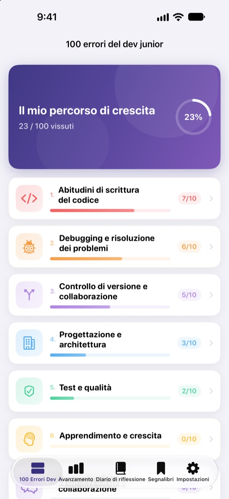
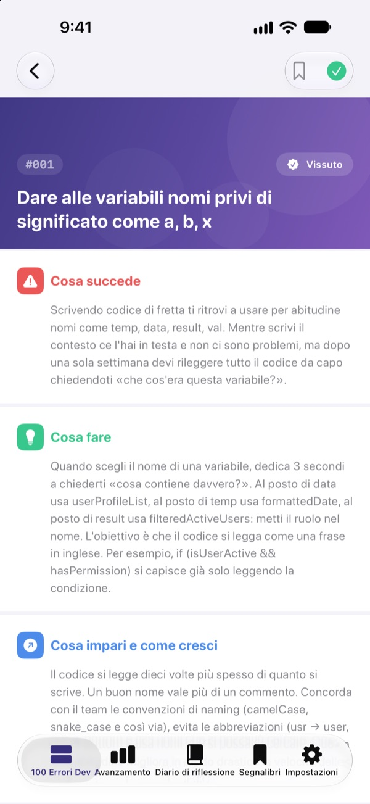
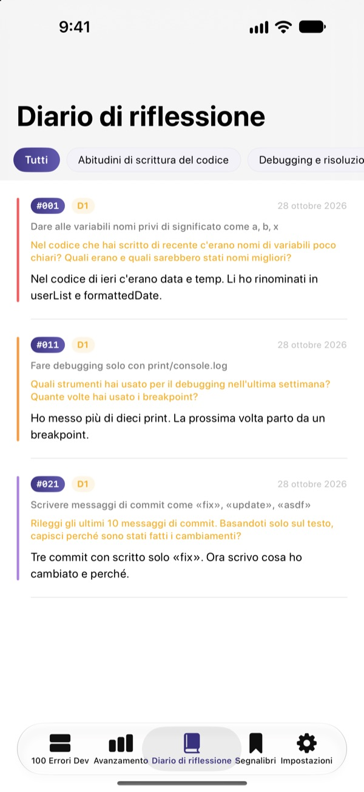
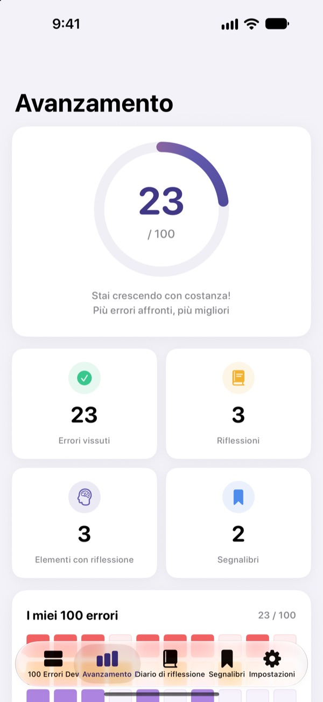

Conosci gli errori
prima che facciano male
I 100 errori che gli sviluppatori junior fanno più spesso, tutti in un posto. Per ognuno leggi cosa succede, cosa fare e cosa impari, poi rispondi a una domanda di riflessione per non cascarci una seconda volta.
I primi 30 errori sono gratis. Su iPhone, iPad e Mac.

Apri un errore
Ecco i 10 errori della prima categoria gratuita, parola per parola come nell’app. Segna come Vissuto quelli che ti sono già capitati.
Di nuovo lo stesso commento in code review?
Nomi di variabili incomprensibili, funzioni da 200 righe, codice copiato e incollato. Ci sono passati tutti i senior, ma di solito lo scopri solo sbattendoci contro. 100 Errori Dev ti mostra questi errori in anticipo e ti fa riflettere sul tuo lavoro, così smetti di ripeterli.
Cosa succede, cosa fare, cosa impari
Ogni errore è spiegato in tre parti: cosa succede, cosa fare e cosa ne impari.
Dieci categorie, dalle abitudini di scrittura del codice alla sicurezza e alle prestazioni, con i soli errori che si ripetono davvero nei team.

Domande di riflessione, perché resti
Ogni errore ha 4 domande di riflessione, 400 in tutto. Rispondi pensando ai tuoi progetti e quello che leggi diventa esperienza.
Le risposte finiscono nel diario di riflessione, divise per categoria, pronte da rileggere.

Guarda quanta strada hai fatto
Spunta gli errori che hai vissuto e il tuo avanzamento cresce per categoria e in totale. Aggiungi un segnalibro a ciò che vuoi rivedere.
Tutto si sincronizza con iCloud tra iPhone, iPad e Mac.

Si parte in tre passi
- 1
Scegli una categoria
Abitudini di scrittura del codice, debugging e controllo di versione sono aperte gratis.
- 2
Leggi e spunta
Tocca Vissuto sugli errori che hai già commesso.
- 3
Rifletti
Scrivi una risposta, anche breve. Finisce nel tuo diario di riflessione.
Le 10 categorie
- Abitudini di scrittura del codice
- #001–#010 · Gratis
- Debugging e risoluzione dei problemi
- #011–#020 · Gratis
- Controllo di versione e collaborazione
- #021–#030 · Gratis
- Progettazione e architettura
- #031–#040 · PRO
- Test e qualità
- #041–#050 · PRO
- Apprendimento e crescita
- #051–#060 · PRO
- Comunicazione e collaborazione
- #061–#070 · PRO
- Deploy e operatività
- #071–#080 · PRO
- Sicurezza e dati
- #081–#090 · PRO
- Prestazioni e ottimizzazione
- #091–#100 · PRO
Ogni categoria ha 10 errori, ogni errore 4 domande di riflessione.
30 gratis. Tutti e 100 con PRO.
Gratis
- Le prime 3 categorie, 30 errori
- Le loro 120 domande di riflessione
- Checklist, diario di riflessione, avanzamento e segnalibri
- Sincronizzazione iCloud (iPhone, iPad, Mac)
100 Errori Dev PRO
- Le altre 7 categorie, 70 errori in più (#031–#100)
- 280 domande di riflessione in più
- Tutti i futuri aggiornamenti dei contenuti
Abbonamento mensile, annuale (fino al 50% in meno del mensile) o acquisto unico a vita.
Nessun dato personale raccolto, niente strumenti di analisi né pubblicità.
Domande frequenti
Cosa è gratis?
Tutti i 30 errori e le relative domande delle categorie Abitudini di scrittura del codice, Debugging e risoluzione dei problemi, Controllo di versione e collaborazione. Anche checklist, diario di riflessione, avanzamento, segnalibri e sincronizzazione iCloud sono gratis.
Come uso PRO su un altro dispositivo?
Accedi con lo stesso ID Apple e tocca Ripristina acquisti nella schermata dell’abbonamento.
Come disdico l’abbonamento?
In qualsiasi momento da Impostazioni › ID Apple › Abbonamenti. L’abbonamento si rinnova automaticamente se non lo disdici almeno 24 ore prima della fine del periodo in corso. L’acquisto a vita si paga una volta sola.
I dati non si sincronizzano tra i dispositivi.
Controlla che tutti i dispositivi abbiano effettuato l’accesso a iCloud con lo stesso ID Apple e che iCloud sia attivo per questa app nelle Impostazioni. Per sincronizzare serve anche una connessione di rete.
Come cancello tutto?
Tocca Reimposta tutti i dati nelle impostazioni dell’app. Spunte, risposte e segnalibri vengono eliminati e non si possono recuperare.
Su quali dispositivi funziona?
iPhone, iPad e Mac. PRO si sblocca su tutti i dispositivi con lo stesso ID Apple.
I miei dati vengono inviati da qualche parte?
No. Spunte e risposte restano solo sui tuoi dispositivi e nel tuo iCloud. L’app non raccoglie dati personali e non ha strumenti di analisi né pubblicità.
Domande o suggerimenti? Scrivi a leeo@kakao.com.